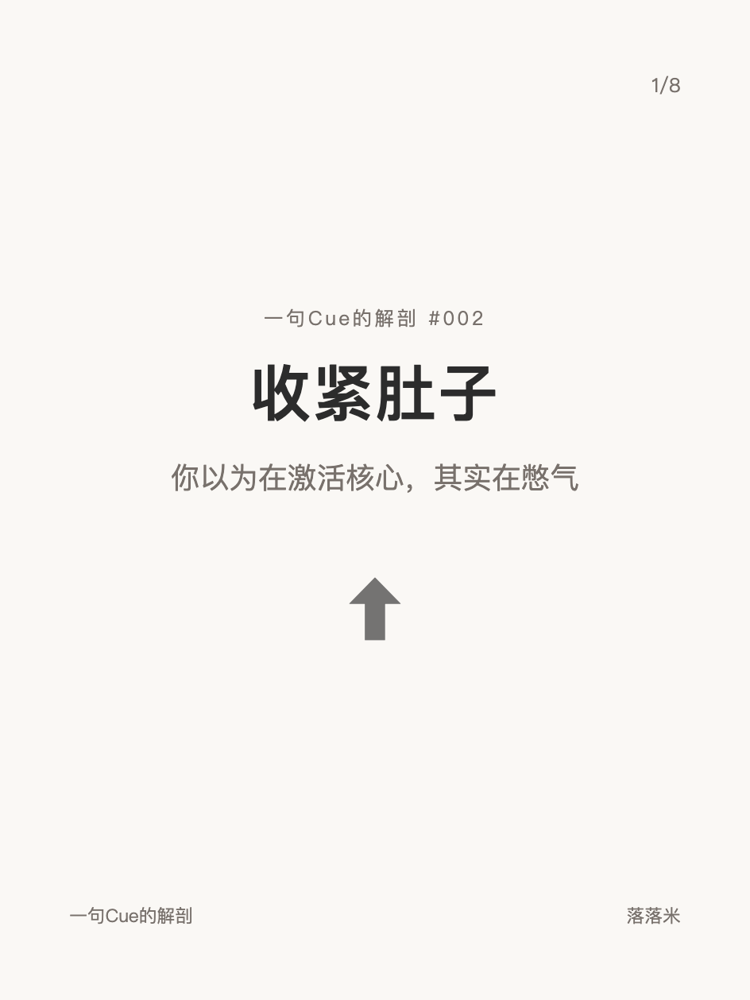
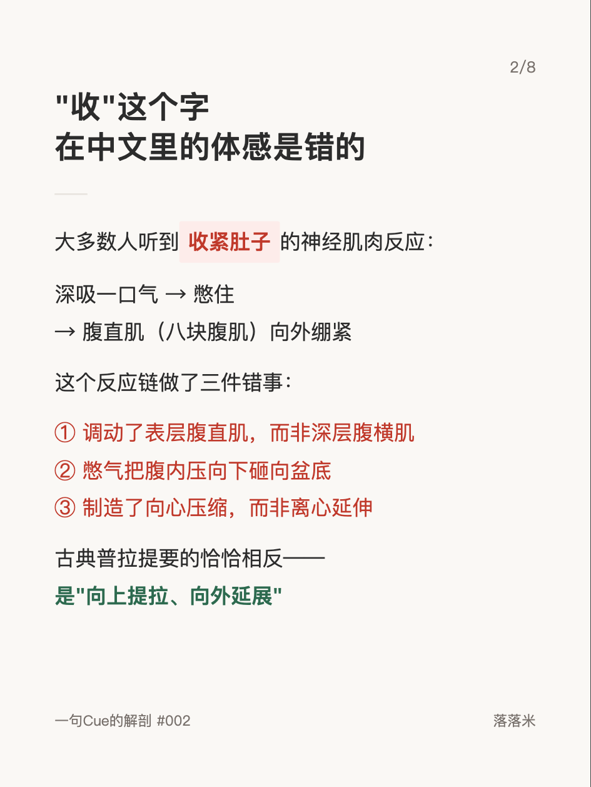
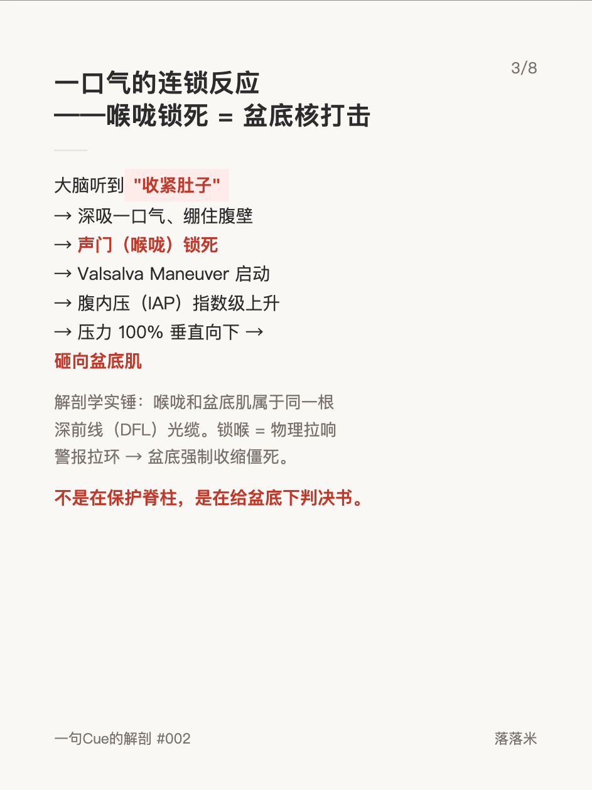
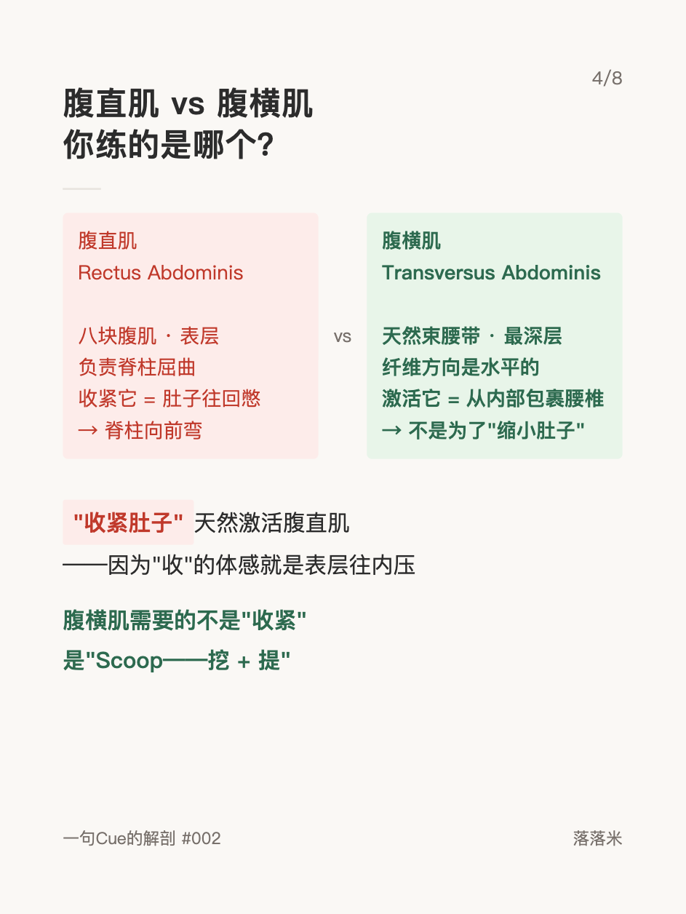
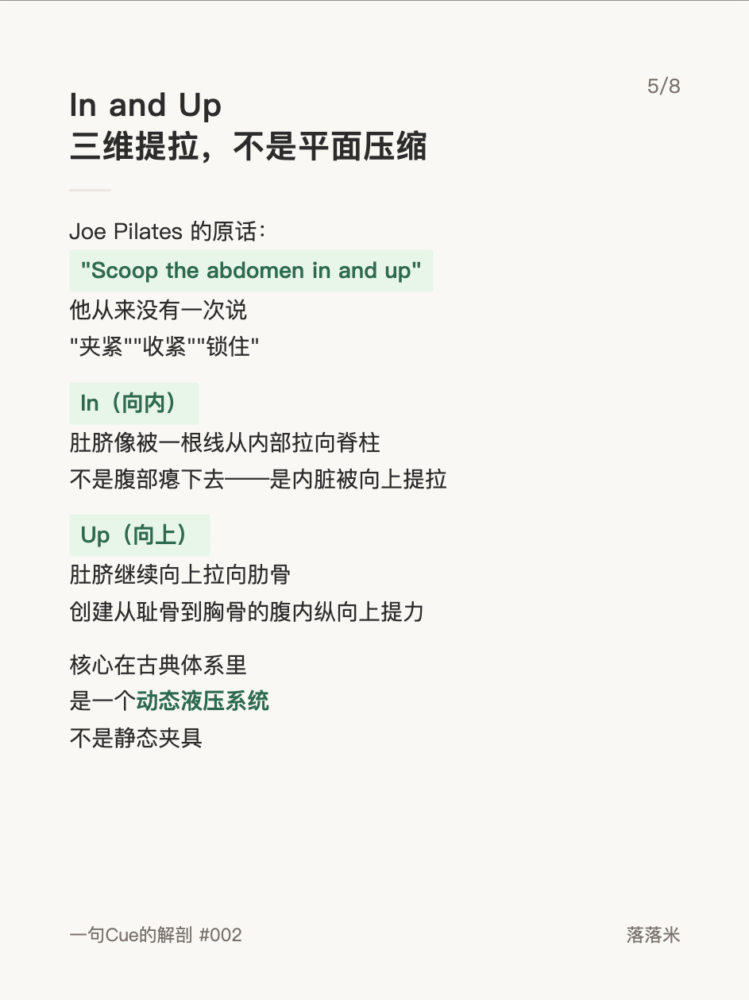
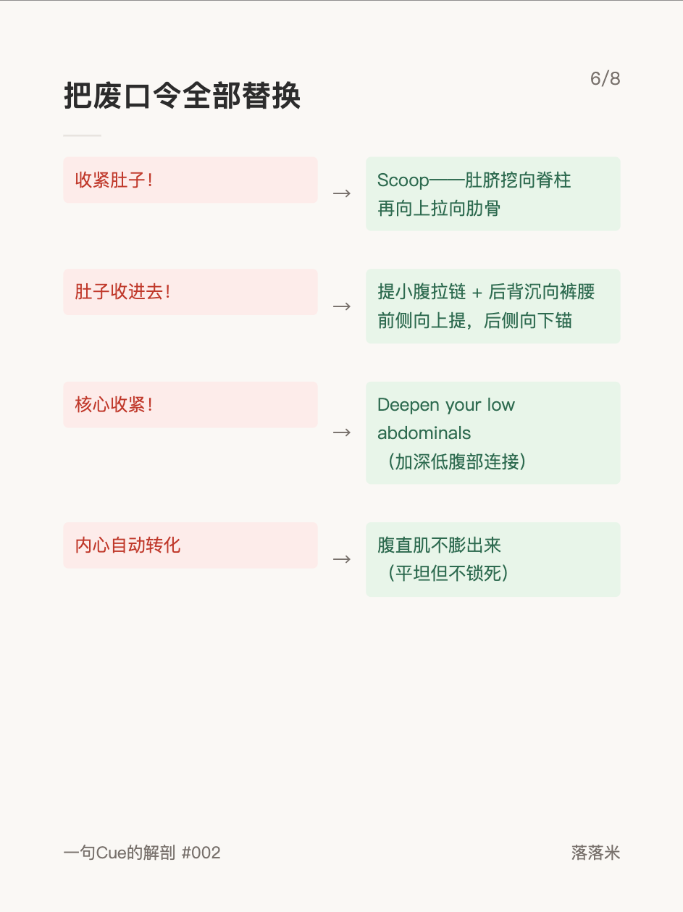
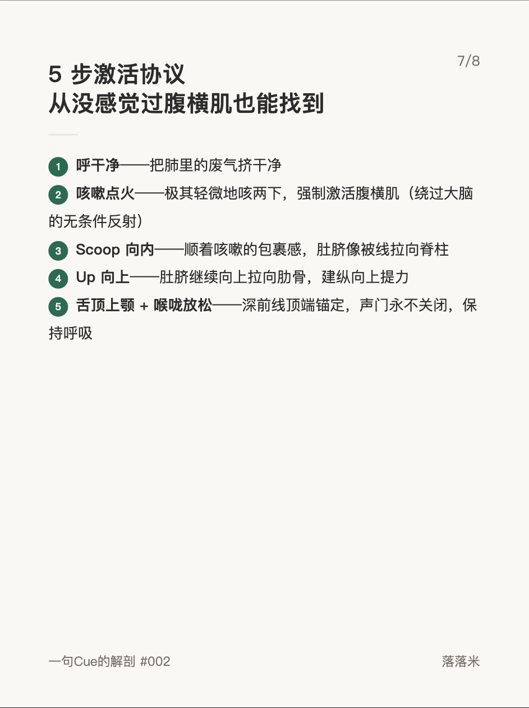
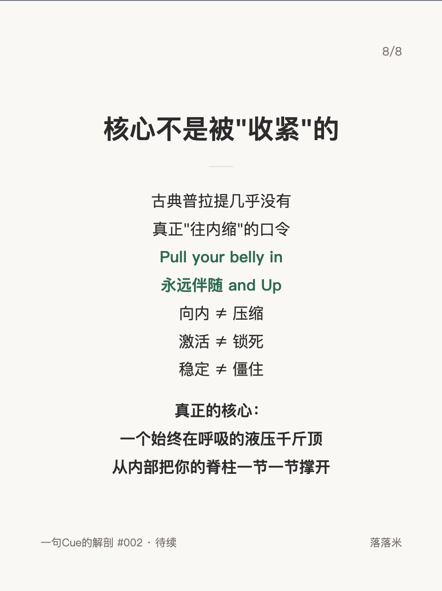

解剖学系列 #002
收紧肚子——你以为在激活核心，其实在憋气

1 / 8

2 / 8

3 / 8

4 / 8

5 / 8

6 / 8

7 / 8

8 / 8
← 左右滑动浏览全部卡片 →
"下巴找锁骨"是普拉提课堂上最常见的口令之一。但这句话诱导的是一个二维的、屈曲主导的动作——颈椎被压缩、胸椎被锁死、前侧链过度激活而后侧链完全离线。
这组卡片拆解了这个废口令的完整力学链路，并给出了古典正解：不是下巴去找锁骨，是颅顶向远延伸、脊柱像弹簧一样逐节拉开。